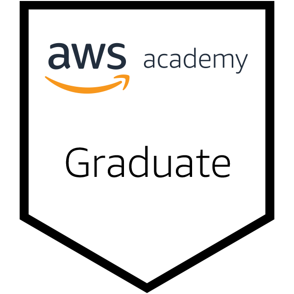
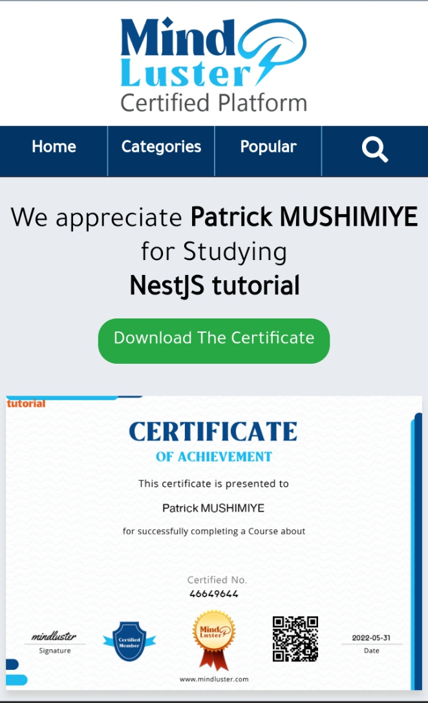
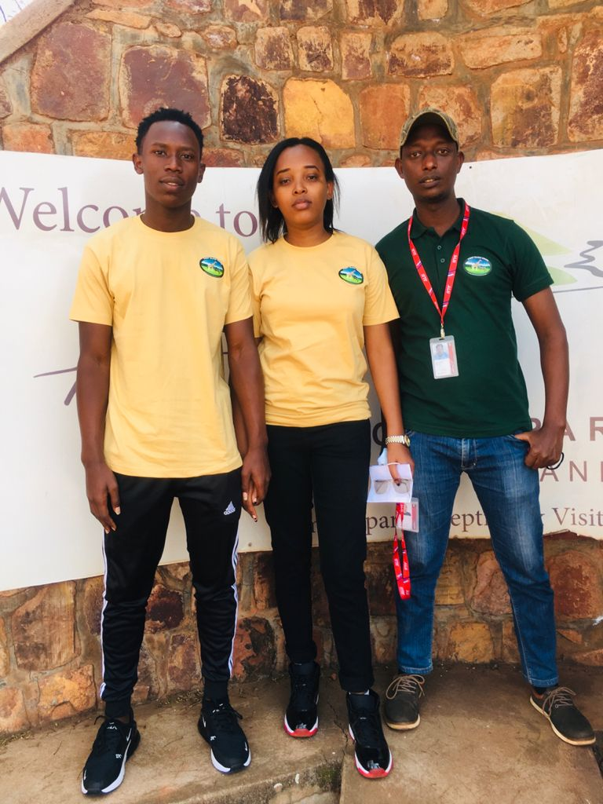
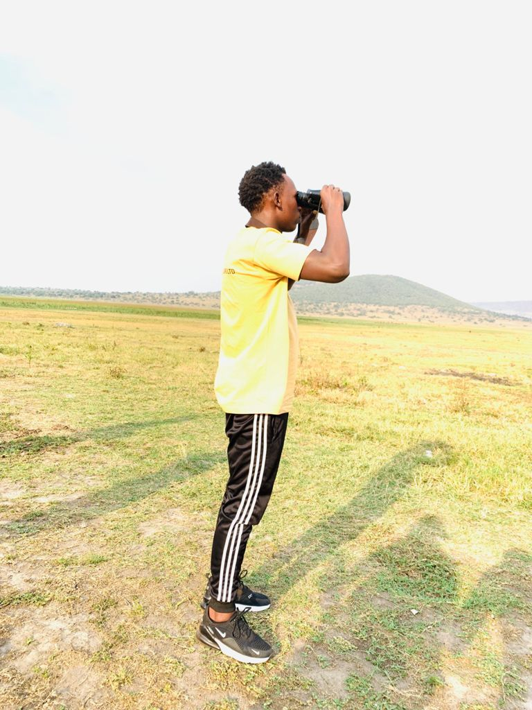
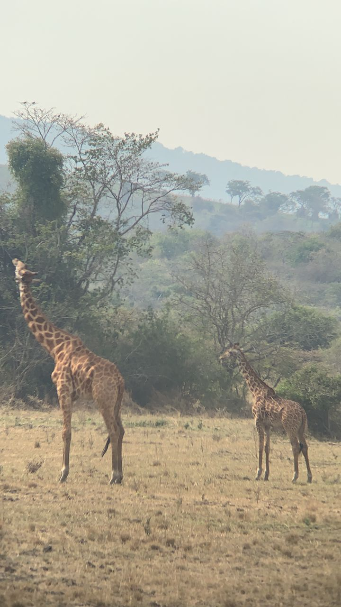
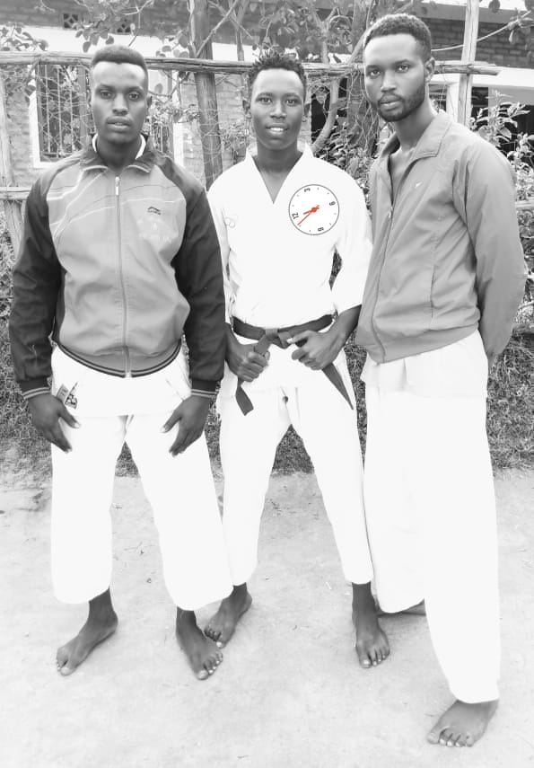
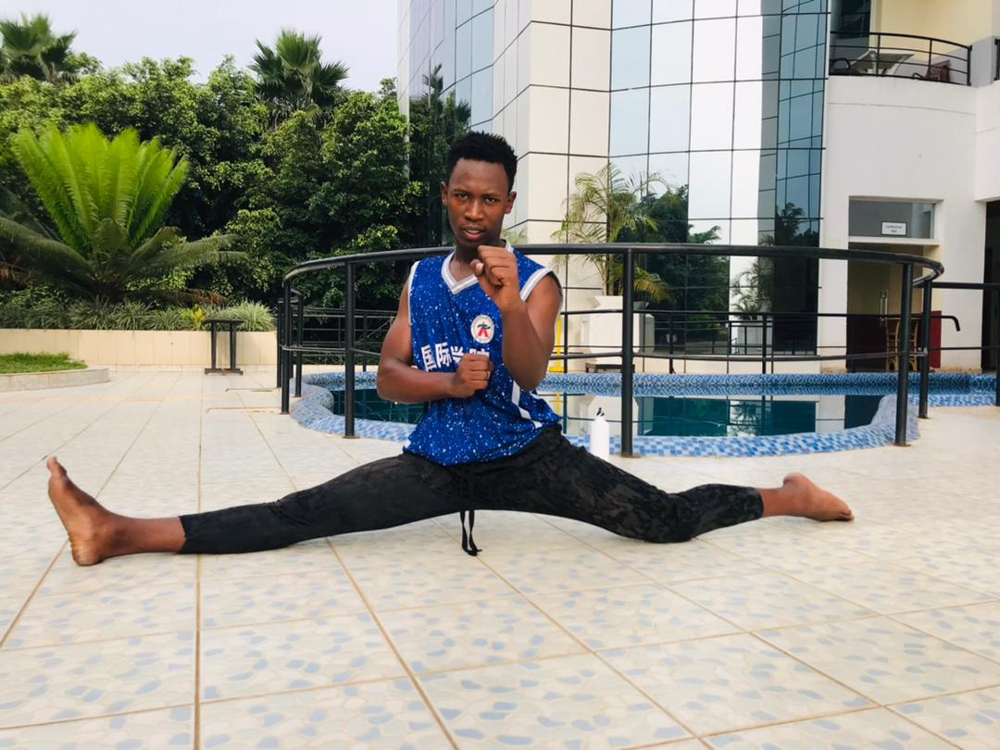
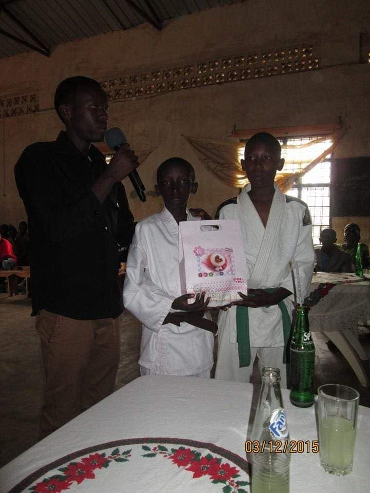

Patrick MUSHIMIYE
Congolese/Kigali City, Rwanda|(+250)783571912
p.mushimiy@alustudent.com
Linkedin:Kalisa Patrick
SUMMARY
I am a student at an African leadership university. I am passionate about coding, solving mathematics questions, and dealing with real-life problems. I’m also able to deal with either expected or unexpected changes in a certain compound and I have the ability to work in a team as well as manage and motivate them. I am fascinated in collaborating with diverse people with different skills and culture because day to day I often learn from things around me. In my leisure time I do sports such as jogging, playing karate, football and barely listening to soft music.
EDUCATIONAL CLARIFICATION
African LeaderShip University /Kigali, Rwanda
Bachelor Degree in Computer Sciences
2020-present
YEAR TWO
Relevant Course:
Semester One
Course name
- Programming I (Python)
- Mathematical Foundations Of Computing
- Discrete mathematics
- Database System
- Carrier Development
Semester two
Course name
- Data Structure And Algorithms
- Programming II (JAva)
- Web Development
- Computer Architecture
- Carrier Development
YEAR One
Relevant Course:
- Data and Decisions
- Projects
- Communicating for Impact
- Entrepreneurial Leadership
- Carrier Development
GPA: 3.88/5
Muhororo Secondary School(Mss) /Kigali, Rwanda
Diploma A2
2017-2019
Combination: MCE
- Mathematics
- Computer Science
- Economics
GPA: 64/73 (87.67%)
The ordinary level at Amahoro kiziba college / kigali, Rwanda
O, level transcript
2014-2016
PROJECT I'VE BEEN WORKING ON
The project I've been working on was a school project which was intended to develop The ALU coffee selling app
which was a simple fiction application that would be used by ALU cafe shops to sell their coffee at the ALU campus.
The app were purposely to allow the user to create their own account so that they can be able to sign in and get
all information
stored on the app with all criteria items, price and payment method.
SKILLS
The skills I posses are:
- Time management/working on time
- Experience from using different platforms
- Risk management
- Critical thinking and Problem-solving
PROFESSIONAL WORK EXPERIENCE
- Hardware maintenance and software developer intern at ULK November 2018 - january 2019
- Sales manager at First class tour ltd August 2021 - September 2021
- I am certified in:
- AWS(Amazon Web Server) 
- R programming,
- data science
- React JS
- nest js
- Angular Js
- PHP
- Making QR code in python

  
EXTRACURRICULAR ACTIVITY
- Teacher/Sampai of school karate/djodo as volunteer
- Dispatcher
- volunteer to community work
SKILLS
- Computer Science skills
- ICT skills such using some google products like google docs, google sheet, and jamboard and Ms Word, Excel, and Powerpoint
- Consultant
- Software development
- Database design
- Problem-solving
- Interpersonal skills
INTERESTS AND HOBBIES
- Karate
- Football
- Togetherness
  
LANGUAGES
- Kinyarwanda
- English